Home
提到数学，很多人第一反应就是头疼
但其实，数学有着它独特的美
看完这一组，也许你就能感受到……
1.三角形内角和为180
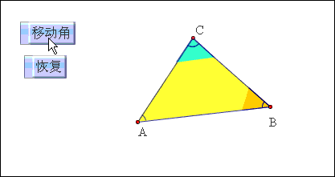
2.多边形外角和为360
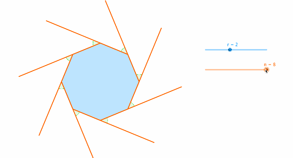
3.怎样将一个正三角形剪拼成正方形？
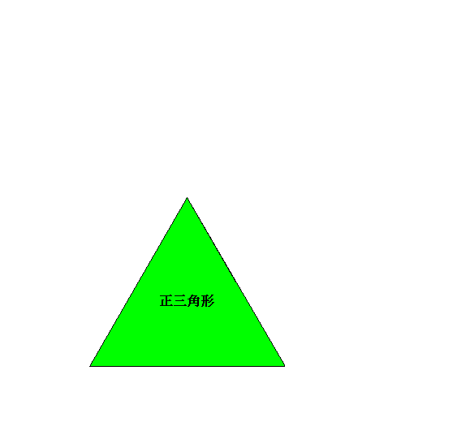
4.怎样把两正方形剪拼成一个大正方形？
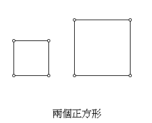
5.怎样把一个四边形剪拼成一个长方形？
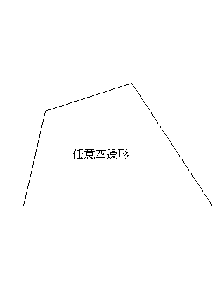
6.莫比乌斯带
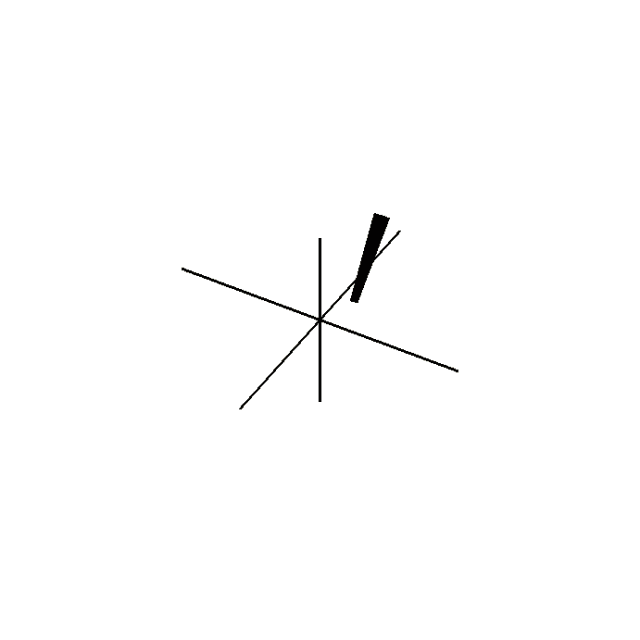
7.正方体展开图
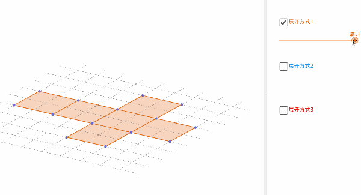
8.圆周率
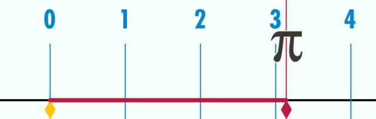
9.圆的面积
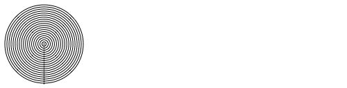
10.根号下a在数轴上的位置
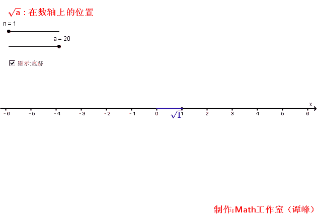
11.勾股定理及其证明
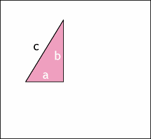
12.勾股“树”
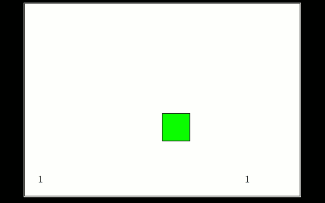
13.平稳滚动的正多边形
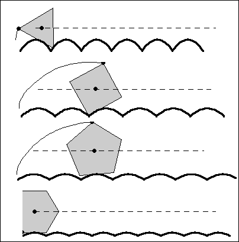
14.弧长等于半径的弧
其所对的圆心角为1弧度。
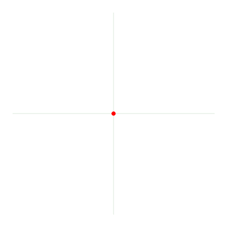
15.函数广播体操
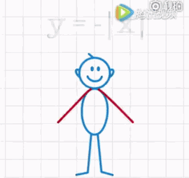
16.sin和cos的追逐游戏
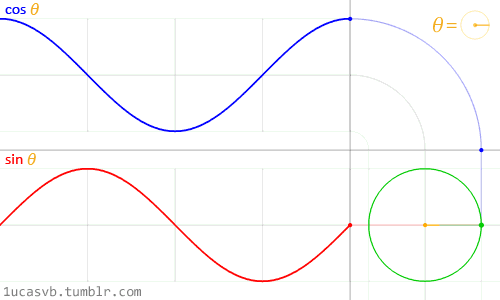
17.正弦余弦的空间展示
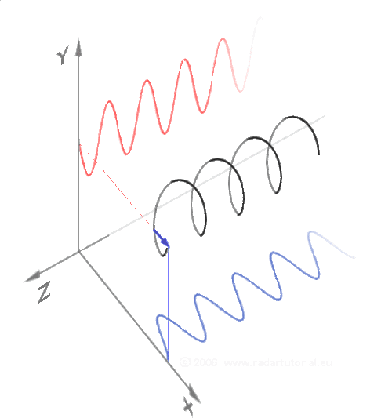
18.正切线
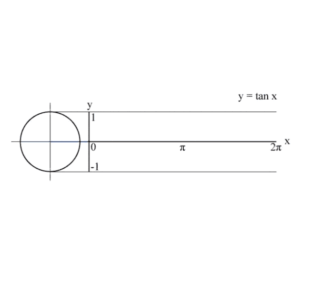
19.圆和三角函数
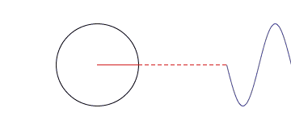
20.画抛物线
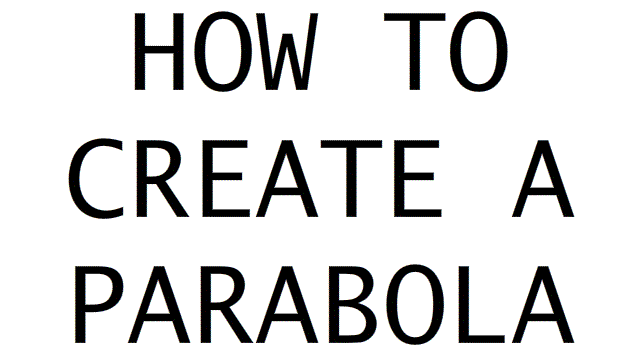
21.双曲线
22.圆锥曲线
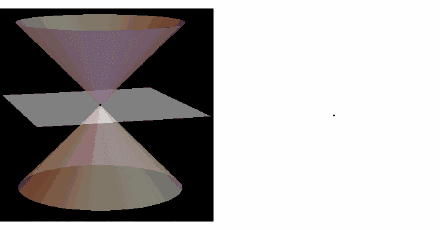
23.神奇的数学之心
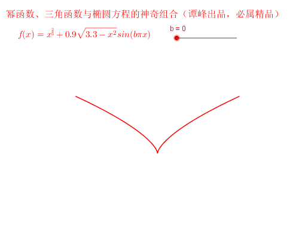
24.单叶双曲面
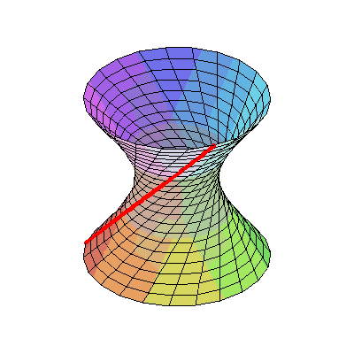
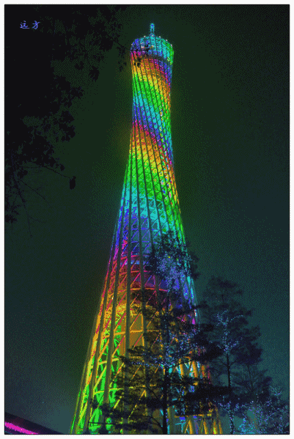
（广州电视塔“小蛮腰”）
25.矩阵转置
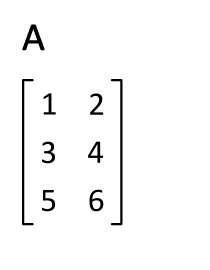
26.尺规作图正三角形
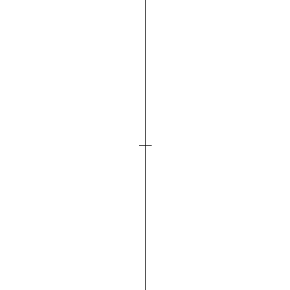
27.尺规作图正五边形
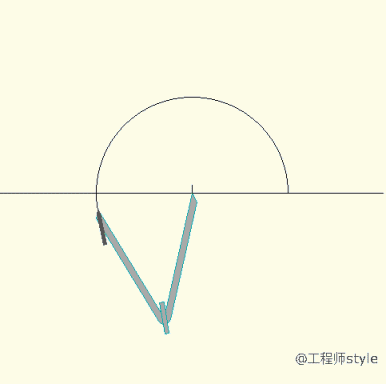
28.尺规作图正六边形
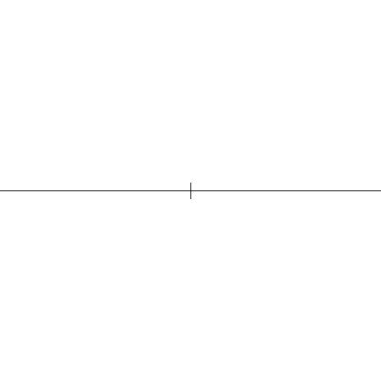
29.最速降线
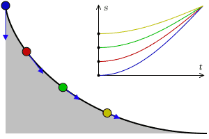
30.旋轮线（摆线）
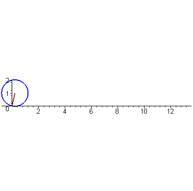
31.心形线
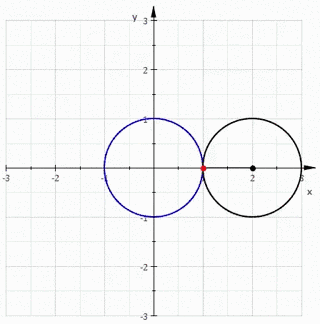
32.定积分的近似计算
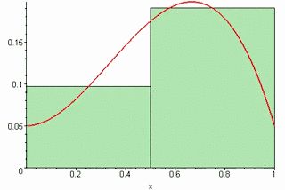
33.二重积分的黎曼和
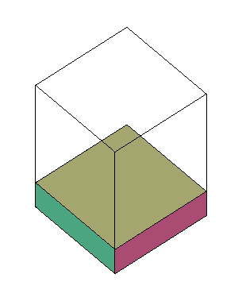
34.科赫曲线（雪花曲线）
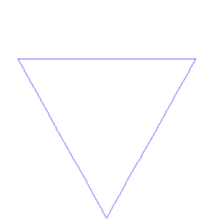
35.Dragon curve
36.无限正方形
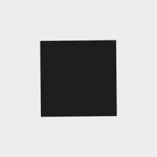
37.平面和圆环面的一种特殊交线
Villarceau circles
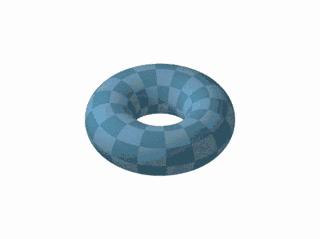
38.三维分形
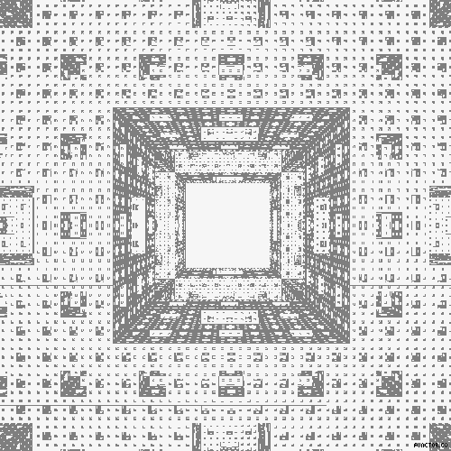
39.傅立叶变换
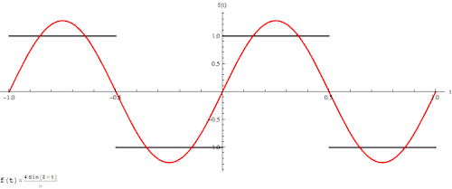
40.不可能图形